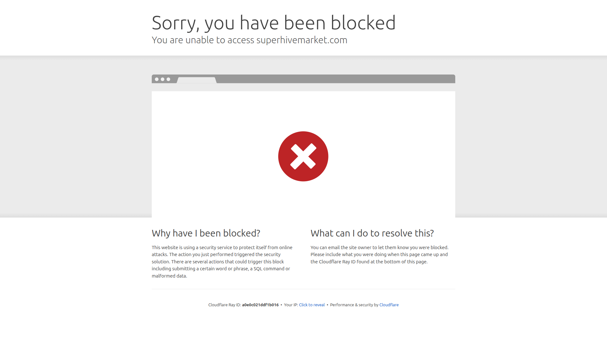

BLENDER FACIAL ANIMATION
FaceIt 是 Blender 的全方位面部動畫外掛，提供面部綁定、Shape Keys 生成、即時 ARKit 動捕接收和表情錄製。支援任意 3D 角色，從綁定到動捕一站完成。

FaceIt 是 Blender 的全方位面部動畫外掛，提供面部綁定、Shape Keys 自動生成、即時 ARKit 動捕接收和表情錄製。支援任意 3D 角色，從綁定到動捕一站完成。
⚠️ 傳統臉部動畫
✅ FaceIt 方案
FaceIt 相關教學與展示。
FaceIt 是 Blender 的全方位面部動畫外掛，提供面部綁定、Shape Keys 生成、即時 ARKit 動捕接收和表情錄製。支援任意 3D 角色，從綁定到動捕一站完成。
FaceIt 是 Blender 的全方位面部動畫外掛，提供面部綁定、Shape Keys 生成、即時 ARKit 動捕接收和表情錄製。支援任意 3D 角色，從綁定到動捕一站完成。
付費（Blender Market ~$40-80）
✅ 優點
❌ 缺點
本工具在 AI 動作量產工作流中的定位與搭配方式。
FaceIt 是 Blender 的全方位面部動畫外掛，提供面部綁定、Shape Keys 生成、即時 ARKit 動捕接收和表情錄製。支援任意 3D 角色，從綁定到動捕一站完成。
FaceIt
互補——AI 動作生成工具 做身體動作，FaceIt 做臉部表情。兩者合併才是完整的角色動畫。
MotionLab Research · 2026